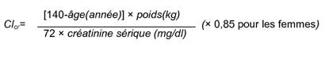

RÉSUMÉ DES CARACTÉRISTIQUES DU PRODUIT
ANSM - Mis à jour le : 31/01/2012
LEVOCETIRA 5 mg, comprimé pelliculé
2. COMPOSITION QUALITATIVE ET QUANTITATIVE
Chaque comprimé pelliculé contient 5 mg de dichlorhydrate de lévocétirizine.
Excipient:
Lactose monohydraté (79 mg par comprimé).
Pour la liste complète des excipients, voir rubrique 6.1.
Comprimé pelliculé.
Comprimé pelliculé blanc, rond, biconvexe.
4.1. Indications thérapeutiques
Traitement symptomatique de la rhinite allergique (incluant la rhinite allergique persistante) et de l'urticaire.
4.2. Posologie et mode d'administration
Voie orale.
Les comprimés seront avalés avec une boisson sans être croqué, avec ou sans nourriture.
Il est recommandé de prendre la dose quotidienne en une seule prise.
Adultes et enfants de plus de 12 ans:
5 mg en une prise par jour, soit 1 comprimé à 5 mg par jour.
Sujets âgés:
La dose devra être adaptée chez le sujet âgé s'il présente une insuffisance rénale modérée à sévère (voir rubrique "Insuffisant rénal" ci-dessous).
Enfants de 6 à 12 ans:
5 mg en une prise par jour, soit 1 comprimé à 5 mg par jour.
Enfants de 2 à 6 ans:
La forme comprimé pelliculé dosée à 5 mg ne permet pas l'adaptation posologique chez les enfants de 2 à 6 ans. Il convient d'utiliser une présentation adaptée à cette tranche d'âge.
Enfants de moins de 2 ans:
En l'absence de donnée, l'administration de lévocétirizine n'est pas recommandée chez les enfants de moins de 2 ans.
Insuffisant rénal:
L'intervalle entre les prises doit être ajusté selon la fonction rénale comme indiqué dans le tableau ci-après.
Pour utiliser ce tableau, il est nécessaire de calculer la clairance de la créatinine (Clcr) du patient en ml/min. La Clcr (ml/min) peut être estimée à partir de la valeur de la créatinine sérique (en mg/dl) selon la formule suivante:

Adaptation posologique chez l'insuffisant rénal:
|
Groupes |
Clairance créatinine |
Posologie & fréquence |
|
|
Fonction rénale normale |
≥80 |
1 comprimé une fois par jour |
|
|
Insuffisance rénale légère |
50-79 |
1 comprimé une fois par jour |
|
|
Insuffisance rénale modérée |
30-49 |
1 comprimé une fois tous les 2 jours |
|
|
Insuffisance rénale sévère |
<30 |
1 comprimé une fois tous les 3 jours |
|
|
Insuffisance rénale au stade terminal, patients dialysés |
<10 |
Contre-indiqué |
Chez les enfants ayant une insuffisance rénale, la dose sera adaptée individuellement en fonction de la clairance rénale du patient et de son poids. Il n'y a pas de données spécifiques chez les enfants atteints d'insuffisance rénale.
Insuffisant hépatique:
Aucun ajustement de la dose n'est nécessaire chez les patients atteints d'insuffisance hépatique isolée.
Chez les patients présentant une insuffisance hépatique et rénale, un ajustement de la dose est recommandé (voir "Insuffisant rénal" ci-dessus).
Durée de traitement:
La rhinite allergique intermittente, définie par la présence de symptômes moins de 4 jours par semaine ou pendant moins de 4 semaines, sera traitée en fonction de la pathologie et de son historique. Le traitement peut être arrêté une fois les symptômes disparus et repris lors de la réapparition des symptômes. En cas de rhinite allergique persistante (définie par la survenue de symptômes plus de 4 fois par semaine et sur une période de plus de 4 semaines), un traitement continu peut être proposé au patient pendant la période d'exposition allergénique.
· Hypersensibilité (allergie) à la lévocétirizine, aux dérivés de la pipérazine ou à l'un des composants du produit.
· Insuffisance rénale sévère avec une clairance de la créatinine inférieure à 10 mL/min.
· En raison de la présence de lactose, ce médicament ne doit pas être utilisé en cas de galactosémie congénitale, de syndrome de malabsorption du glucose et du galactose ou de déficit en lactase.
4.4. Mises en garde spéciales et précautions d'emploi
L'utilisation du comprimé pelliculé 5 mg n'est pas recommandée chez l'enfant de moins de 6 ans, car cette forme ne permet pas l'adaptation posologique pour cette tranche d'âge. Il est recommandé d'utiliser une présentation adaptée à l'usage pédiatrique de lévocétirizine.
En raison de l'absence de données, l'administration de lévocétirizine n'est pas recommandée chez les enfants de moins de 2 ans.
La prudence est recommandée en cas d'ingestion d'alcool (voir rubrique 4.5).
4.5. Interactions avec d'autres médicaments et autres formes d'interactions
Aucune étude spécifique d'interaction n'a été réalisée avec la lévocétirizine (notamment avec les inducteurs du CYP3A4). Les études réalisées avec la cétirizine (mélange racémique) n'ont pas révélé d'interaction cliniquement significative avec la pseudoéphédrine, la cimétidine, le kétoconazole, l'érythromycine, l'azithromycine, le glipizide ou le diazépam.
Une légère diminution de la clairance de la cétirizine (16 %) a été observée après administration répétée de théophylline (400 mg une fois par jour), tandis que la biodisponibilité de la théophylline n'est pas modifié par l'administration concomitante de cétirizine.
Le taux d'absorption de la lévocétirizine n'est pas diminué par l'alimentation, bien que la vitesse d'absorption soit réduite.
Chez certains patients sensibles, la prise simultanée d'alcool ou autres dépresseurs du système nerveux central avec la cétirizine ou la lévocétirizine peut entraîner des effets sur le système nerveux central, bien que les études réalisées n'aient pas mis en évidence de potentialisation des effets de l'alcool par la cétirizine (mélange racémique).
Aucune donnée clinique sur des grossesses exposées n'est disponible avec la lévocétirizine.
Les études menées avec la lévocétirizine chez l'animal n'ont pas révélé d'effet néfaste direct ou indirect sur la gestation, le développement embryonnaire et fœtal, la parturition ou le développement post-natal. La prudence est recommandée lors de la prescription chez la femme enceinte ou qui allaite.
4.7. Effets sur l'aptitude à conduire des véhicules et à utiliser des machines
Des études cliniques comparatives réalisées avec la lévocétirizine à la posologie recommandée n'ont pas mis en évidence d'altération de la vigilance, du temps de réaction, ou de la capacité à conduire des véhicules et à utiliser des machines.
Cependant somnolence, sensation de fatigue et asthénie ont été décrits chez certains patients traités par la lévocétirizine. Par conséquent, les patients susceptibles de conduire un véhicule, ou de manipuler un outil ou une machine devront évaluer au préalable leur réponse au traitement.
La fréquence des effets indésirables a été définie comme suit:
|
Très fréquent |
≥1/10 |
|
|
Fréquent |
≥1/100, <1/10 |
|
|
Peu fréquent |
≥1/1000, <1/100 |
|
|
Rare |
≥1/10,0000, <1/1000 |
|
|
Très rare |
<1/10,000 |
|
|
Fréquence indéterminée |
Fréquence ne pouvant pas être estimée à partir des données disponibles |
|
|
Fréquent |
Peu fréquent |
Rare |
Très rare |
|
|
Troubles hématologiques et du système lymphatique |
|
|
|
thrombopénie |
|
|
Troubles du système immunitaire |
|
|
hypersensibilité |
réactions anaphylactiques |
|
|
Troubles psychiatriques |
somnolence |
agitation |
aggressivité |
tic |
|
|
Troubles du système nerveux |
étourdissements |
paresthésie |
convulsions |
dysgueusie |
|
|
Troubles oculaires |
|
|
|
trouble de l'accommodation |
|
|
Troubles cardiaques |
|
|
tachycardie |
palpitations |
|
|
Troubles respiratoires, thoraciques et médiastinaux |
pharyngite |
|
|
dyspnée |
|
|
Troubles gastro-intestinales |
douleur abdominale |
diarrhée |
|
|
|
|
Troubles hépatobiliaires |
|
|
anomalies du bilan hépatique (augmentation des transaminases, des phosphatases alcalines, des γ-GT et de la bilirubine) |
|
|
|
Troubles cutanés et du tissu sous-cutané |
|
prurit |
urticaire |
œdème angioneurotique |
|
|
Troubles rénaux et urinaires |
|
|
|
dysurie |
|
|
Troubles généraux et anomalies au site d'administration |
Sensation de fatigue |
asthénie |
œdème |
|
|
|
Investigations |
|
|
prise de poids |
|
|
* Chez les enfants
Symptômes
Les symptômes de surdosage incluent: chez l'adulte, une somnolence et chez l'enfant, un état d'agitation suivi d'une somnolence.
Conduite à tenir en cas de surdosage
Il n'existe pas d'antidote connu à la lévocétirizine.
En cas de surdosage, un traitement symptomatique sera entrepris sous surveillance médicale. Un lavage gastrique ne sera envisagé qu'en cas d'ingestion récente. La lévocétirizine n'est pas éliminée efficacement par hémodialyse.
5. PROPRIETES PHARMACOLOGIQUES
5.1. Propriétés pharmacodynamiques
Classe pharmacothérapeutique: Antihistaminique à usage systémique, dérivé de la pipérazine.
Code ATC: R06AE09.
La lévocétirizine, le R-énantiomère de la cétirizine, est un antagoniste puissant et sélectif des récepteurs périphériques H1.
Des études de liaison aux récepteurs ont révélé que la lévocétirizine a une forte affinité pour les récepteurs humains H1 (Ki = 3,2 nmol/L). La lévocétirizine a une affinité 2 fois supérieure à celle de la cétirizine (Ki = 6,3 nmol/l). La demi-vie de dissociation de la lévocétirizine des récepteurs H1 est de 115 ± 38 min. Le taux de fixation aux récepteurs après administration unique de lévocétirizine est de 90 % après 4 h et de 57 % à 24 h.
Les études de pharmacodynamie menées chez le volontaire sain ont montré une activité comparable entre la cétirizine et la lévocétirizine administrée à demi dose, tant au niveau de la peau que du nez.
Les propriétés pharmacodynamiques de la lévocétirizine ont été étudiées dans des essais randomisés contrôlés.
Une étude a comparé les effets de la lévocétirizine 5 mg, la desloratadine 5 mg et un placebo, sur la réaction érythémato-papuleuse induite à l'histamine. Le traitement par lévocétirizine a significativement réduit papules et érythème (p < 0,001) avec une intensité maximale dans les 12 premières heures et maintenue pendant 24 h comparativement à la desloratadine et au placebo.
Dans une étude contrôlée contre placebo en chambre d'exposition pollinique, le délai d'action sur les symptômes a été de 1 heure après administration de 5 mg de lévocétirizine.
Les études menées in vitro (chambre de Boyden et technique sur culture cellulaire) montrent que la lévocétirizine inhibe in vitro la migration transendothéliale des éosinophiles à travers des cellules dermiques et bronchiques induite par l'éotaxine. La lévocétirizine inhibe la phase précoce de la réaction allergique, phase de libération de l'histamine, et réduit également la migration de certaines cellules inflammatoires et la libération de certains médiateurs associés à la phase tardive de la réaction allergique.
L'efficacité et la sécurité de la lévocétirizine ont été démontrées dans plusieurs études cliniques en double aveugle contrôlées contre placebo chez des patients adultes présentant une rhinite allergique saisonnière ou perannuelle.
La sécurité et l'efficacité de la lévocétirizine dans la population pédiatrique ont été comparées à celles de la cétirizine et au placebo dans des études cliniques menées chez des patients âgés de 6 à 12 ans atteints de rhinite allergique perannuelle. Les symptômes et la qualité de vie étaient améliorés avec la lévocétirizine et la cétirizine en comparaison au placebo.
Relation pharmacocinétique/pharmacodynamie:
L'effet sur les réactions cutanées provoquées par l'histamine n'est pas corrélé à l'évolution des concentrations plasmatiques.
Les ECG n'ont pas montré d'effets de la lévocétirizine sur l'intervalle QT.
5.2. Propriétés pharmacocinétiques
La pharmacocinétique de la lévocétirizine est linéaire et indépendante du temps et de la dose, avec une faible variabilité inter-individuelle. Les profils pharmacocinétiques de la lévocétirizine et de la cétirizine sont identiques. Aucune conversion chirale n'intervient au cours des processus d'absorption et d'élimination.
Absorption:
La lévocétirizine est rapidement et largement absorbée après l'administration orale. Chez l'adulte, les concentrations plasmatiques maximales sont atteintes 0,9 heure après la prise. L'état d'équilibre est atteint après 2 jours. Les concentrations plasmatiques maximales sont de 270 ng/ml et 308 ng/ml après administration, respectivement, d'une dose unique de 5 mg et de doses répétées de 5 mg par jour. La biodisponibilité est indépendante de la dose et n'est pas modifiée par la prise alimentaire, cependant, le pic de concentrations apparaît diminué et retardé.
Distribution:
Aucune donnée n'est disponible chez l'homme concernant la diffusion tissulaire ou le passage de la barrière hémato-encéphalique de la lévocétirizine. Chez le rat et le chien, les plus fortes concentrations tissulaires ont été retrouvées au niveau du foie et des reins, les plus faibles au niveau du système nerveux central.
La lévocétirizine est liée à 90 % aux protéines plasmatiques. La distribution de la lévocétirizine est restreinte, puisque son volume de distribution est de 0,4 L/kg.
Métabolisme:
Chez l'homme, la fraction de lévocétirizine métabolisée est inférieure à 14 % de la dose absorbée. Par conséquent, les différences résultant d'un polymorphisme génétique ou de la prise concomitante d'inhibiteurs enzymatiques sont considérées comme négligeables. Les voies métaboliques comprennent l'oxydation aromatique, la N et O - déalkylation et la conjugaison taurine. Les voies de déalkylation impliquent en premier lieu le CYP 3A4, l'oxydation implique des isoformes multiples et/ou non identifiées des CYP. La lévocétirizine n'a pas d'effet sur l'activité des isoenzymes CYP 1A2, 2C9, 2C19, 2D6, 2E1 et 3A4 à des concentrations nettement supérieures à celles atteintes après l'administration orale d'une dose de 5 mg.
En raison de sa faible métabolisation et de l'absence de potentiel inhibiteur du métabolisme, l'interaction de la lévocétirizine avec d'autres substances, ou vice-versa, est peu probable.
Elimination:
Chez l'adulte, la demi-vie plasmatique est de 7,9 ± 1,9 heures. La clairance corporelle totale apparente moyenne est de 0,63 ml/min/kg. La principale voie d'élimination de la lévocétirizine et de ses métabolites est urinaire, représentant en moyenne 85,4 % de la dose. L'élimination par voie fécale ne représente que 12,9 % de la dose. La lévocétirizine est excrétée à la fois par filtration glomérulaire et par sécrétion tubulaire active.
Insuffisance rénale:
La clairance corporelle apparente de la lévocétirizine est corrélée à la clairance de la créatinine. Il est par conséquent recommandé d'ajuster la fréquence d'administration de la lévocétirizine en fonction de la clairance de la créatinine chez les patients atteints d'insuffisance rénale modérée à sévère. Chez les patients anuriques atteints d'insuffisance rénale au stade terminal, la clairance corporelle totale est réduite d'environ 80 % par rapport à celle d'un sujet normal.
5.3. Données de sécurité préclinique
Les données non cliniques issues des études conventionnelles de pharmacologie de sécurité, de toxicités en administration répétées, de génotoxicité, de potentiel carcinogène et de toxicité sur la reproduction, n'ont pas révélé de risque potentiel particulier pour l'homme.
Lactose monohydraté
Cellulose microcristalline
Silice colloïdale anhydre
Stéarate de magnésium
Pelliculage:
Hypromellose
Dioxyde de titane (E171)
Macrogol 400.
Sans objet.
3 ans.
6.4. Précautions particulières de conservation
A conserver dans l'emballage extérieur d'origine, à l'abri de la lumière.
6.5. Nature et contenu de l'emballage extérieur
Plaquettes thermoformées (polyamide-aluminium/PVC-aluminium).
Boîte de: 1, 2, 4, 5, 7, 10, 2 x 10, 10 x 10, 14, 15, 20, 21, 28, 30, 40, 50, 60, 70, 90, 100.
Toutes les présentations peuvent ne pas être commercialisées.
6.6. Précautions particulières d’élimination et de manipulation
Pas d'exigences particulières.
7. TITULAIRE DE L’AUTORISATION DE MISE SUR LE MARCHE
ALFRED E. TIEFENBACHER (GMBH & CO. KG)
VAN-DER-SMISSEN-STR. 1
22767 HAMBURG
ALLEMAGNE
8. NUMERO(S) D’AUTORISATION DE MISE SUR LE MARCHE
· 216 568-5 ou 34009 216 568 5 5: 1 comprimé sous plaquette thermoformée (polyamide-aluminium/PVC-aluminium).
· 216 569-1 ou 34009 216 569 1 6: 2 comprimés sous plaquettes thermoformées (polyamide-aluminium/PVC-aluminium).
· 216 571-6 ou 34009 216 571 6 6: 4 comprimés sous plaquettes thermoformées (polyamide-aluminium/PVC-aluminium).
· 216 572-2 ou 34009 216 572 2 7: 5 comprimés sous plaquettes thermoformées (polyamide-aluminium/PVC-aluminium).
· 216 573-9 ou 34009 216 573 9 5: 7 comprimés sous plaquettes thermoformées (polyamide-aluminium/PVC-aluminium).
· 216 574-5 ou 34009 216 574 5 6: 10 comprimés sous plaquettes thermoformées (polyamide-aluminium/PVC-aluminium).
· 216 575-1 ou 34009 216 575 1 7: 14 comprimés sous plaquettes thermoformées (polyamide-aluminium/PVC-aluminium).
· 216 576-8 ou 34009 216 576 8 5: 15 comprimés sous plaquettes thermoformées (polyamide-aluminium/PVC-aluminium).
· 216 577-4 ou 34009 216 577 4 6: 20 comprimés sous plaquettes thermoformées (polyamide-aluminium/PVC-aluminium).
· 216 578-0 ou 34009 216 578 0 7: 21 comprimés sous plaquettes thermoformées (polyamide-aluminium/PVC-aluminium).
· 216 579-7 ou 34009 216 579 7 5: 28 comprimés sous plaquettes thermoformées (polyamide-aluminium/PVC-aluminium).
· 216 580-5 ou 34009 216 580 5 7: 30 comprimés sous plaquettes thermoformées (polyamide-aluminium/PVC-aluminium).
· 580 650-6 ou 34009 580 650 6 4: 40 comprimés sous plaquettes thermoformées (polyamide-aluminium/PVC-aluminium).
· 580 651-2 ou 34009 580 651 2 5: 50 comprimés sous plaquettes thermoformées (polyamide-aluminium/PVC-aluminium).
· 580 652-9 ou 34009 580 652 9 3: 60 comprimés sous plaquettes thermoformées (polyamide-aluminium/PVC-aluminium).
· 580 653-5 ou 34009 580 653 5 4: 70 comprimés sous plaquettes thermoformées (polyamide-aluminium/PVC-aluminium).
· 580 654-1 ou 34009 580 654 1 5: 90 comprimés sous plaquettes thermoformées (polyamide-aluminium/PVC-aluminium).
· 580 655-8 ou 34009 580 655 8 3: 100 comprimés sous plaquettes thermoformées (polyamide-aluminium/PVC-aluminium).
9. DATE DE PREMIERE AUTORISATION/DE RENOUVELLEMENT DE L’AUTORISATION
[à compléter par le titulaire]
10. DATE DE MISE A JOUR DU TEXTE
[à compléter par le titulaire]
Sans objet.
12. INSTRUCTIONS POUR LA PREPARATION DES RADIOPHARMACEUTIQUES
Sans objet.
Liste II.